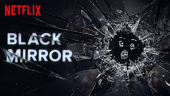
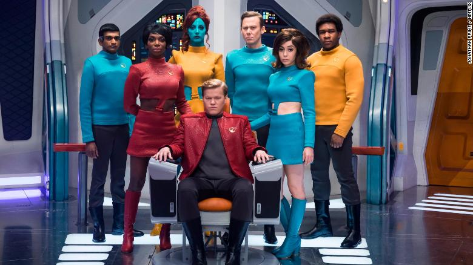

My Favorite TV show
Black Mirror
One of my favorite tv show's recently is a netflix original called black mirror. It is a show about different story lines unfolding in every episode that is completely stand alone for every episode and doesn't require a viewer to watch from start to finish and can been seen from any episode. Each episode tells a story about how we all use technology in our every day lives and how we depend on it so much. In the distant future were technology is advanced to the point its implanted in our eyes and becomes a display app. Black mirror is sort of a reflection to out society in very dark tone of story telling. Almost every episode doesn't have a happy ending and the bad people usually come out winning because of society voting with their eyeballs.
 